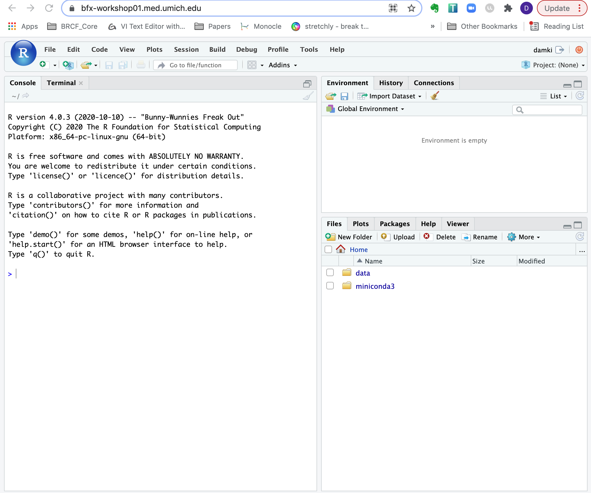

Reproducible Research
Today we’ll be exploring some RNA-seq data that is fairly representative of what we see in the core and start with input files similar to the count table you generated in the previous steps and similar to one of the outputs currently being delivered by the Advanced Sequencing Core.
[Warm-Up]
To get started, let’s get a sense of what approaches you already use to compare gene expression:
- If you’ve run a qPCR assay and enjoyed all the pipetting, put up a green ‘check’. If you’ve run a qPCR assay and needed some time away from the multichannels, put up a red ‘x’ from the reaction panel.
- If cloning a gene reporter construct (ie: promoter + GFP), worked for you the first time, put up a green check. If you have a freezer box full of cloning attempts, put up a red ‘x’.
- If you are ready to learn about bioinformatic tools for comparing gene expression, put up a green check. If you have some questions that should be addressed before we get started, use the ‘raise hand’ reaction.
Logging into the RStudio server
First navigate to server address bfx-workshop01.med.umich.edu, using a web browser. You may see a sign-in prompt screen, similar to shown below:

Next, use your unique name and the same password used yesterday to log-in to the server from the command line. You should now see some familiar RStudio panels in your web browser window:

Creating our code file
First, we’ll create a new code file, using the toolbar at the top of our window and clicking the icon that looks like a white square with a small green plus symbol.
From the drop down menu, select the first option named ‘R Script’.
A new window should pop up in your console.
Checkpoint: Please use the red ‘x’ button in your zoom reaction panel if you would like these steps repeated and the green ‘check’ if you see a new pane with a code file named Untitled1
Best practices for file organization
As widely discussed including in a Nobel, 2009 review, file organization and data stewardship are an important parts of reproducible research.
To follow best practices for file organization for bioinformatics/computational projects, we will need to make sure there are separate locations for:
- Raw data
- Code
- Output files
Such as illustrated in this figure from the Noble review:

To organize our files for our analysis today, we’ll first navigate into the RSD_R directory.
We can see that there is only one folder, data:

However, if we check our working directory, what do we see?
getwd()
Since we aren’t working in RSD_R we will need to set our working directory before creating any new directories.
setwd("~/RSD_R")
Before moving forward, let’s double check that we’re in the right place.
getwd()
After we’ve set our working directory, we’ll use the blue floppy disc icon save our ‘Untitled1’ file as “DE_Analysis.R” in the RSD_R directory.
This new “DE_Analysis.R” will serve as a record of the analysis steps we follow for the remainder of the workshop.
Then we’ll create a new directory called outputs to use later in our code.
dir.create("./DE_outputs")
## Warning in dir.create("./DE_outputs"): './DE_outputs' already exists
Checkpoint: Please use the green ‘check’ if you have saved your code file and see both the data and outputs directories your RSD_R folder and the red ‘x’ if you do not.
Code execution shortcut reminder
Ctrl-Enter is a standard shortcut in Rstudio to send the current line (or selected lines) to the console. If you see an >, then R has executed the command. If you see a +, this means that the command is not complete and R is waiting (usually for a )).
Click for review of R conventions for object names
R has some restrictions for naming objects:
- Cannot start with numbers
- Cannot include dashes
- Cannot have spaces
- Should not be identical to a named function
- Dots & underscores will work but are better to avoid
Check package installations
Several packages have already been installed on the server, so we can load them into our R session now. To do that we’ll use the library function to load the required packages.
library(DESeq2)
library(ggplot2)
library(tidyr)
library(dplyr)
library(matrixStats)
library(ggrepel)
library(pheatmap)
library(RColorBrewer)
library(data.table)
Note: We expect to see some red messages in your console while these packages are loading
R/RStudio has great resources for getting help, including code ‘cheatsheets’ and package vignettes, like for tidyr.
Since we loaded the libraries into our R session, we can see documentation out using the ? operator.
?`DESeq2-package`
Checkpoint: If you see the R documentation for DESeq2 pop up in your ‘help’ panel on the right, please indicate with the green ‘check’ button. If not please use the red ‘x’ button.
Tools for Differential Gene Expression analysis
As discussed during the webinar, a common application for bulk RNA-seq is to test for differential expression between conditions or treatments, using statistical approaches that are appropriate for biological data.
While there are several tools that can be used for differential expression comparisons, we will use DESeq2 in our analysis today.
DESeq2 is one of two tools, along with EdgeR, considered ‘best practice’ for differential expression. Both tools apply similar methods that account for the distributions we expect to see for RNA-seq and are fairly stringent in calling differentially expressed genes, lowering the risk of investigating genes that were really false positives (e.g. don’t really have different expression between treatment groups and therefore are not relevant to the biological process).
Additionally, DESeq2 also has an excellent vignette click link to open from Love, Anders, and Huber, from which our workflow is partially adapted, and is a good resource when analyzing your own data (see also: Love, Anders, and Huber. Genome Biology. 2014.).
Click for additional resources regarding statistical testing and tool comparison for RNA-seq data
To learn more about statistical testing and what distributions best model the behavior of RNA-seq data, a good resource is this EdX lecture by Rafael Irizarry or this lecture by Kasper Hansen. Another helpful guide is this Comparative Study for Differential Expression Analysis by Zhang et al. from 2014.
DESeq2 assumptions and requirements
A key assumption of DESeq2 is that for most experiments biological variance is much greater than technical variance (especially if best practices for quality RNA isolation are followed, including DNase treatment!).
Since calculating variance is key to the statistical approach used for DESeq2, if we tried to compare two treatment groups with less than two replicates, we would get an error (as shown in this blog post). Without replicates, there can’t be statistical significance (e.g. p-values), but qualitative approaches are an option, like looking at the top expressed genes after normalization.
Replicates in RNA-seq experiments
A frequent question for RNA-seq projects is “How many replicates do I need?”.
The general goal of our analyses is to separate the “interesting” biological contributions from the “uninteresting” technical or other contributions that either cannot be or were not controlled in the experimental design. The more sources of variation, such as samples coming from heterogenous tissues or experiments with incomplete knockdowns, the more replicates (>3) are recommended.
For a more in depth discussion of experimental design considerations, particularly for the number of replicates, please read A Beginner’s Guide to Analysis of RNA Sequencing Data and papers like this one by Hart et al that focus on estimating statistical power for RNA-seq experiments.
Sequencing depth recommendations
A related experimental design consideration is how much sequencing depth should be generated per sample. This figure shared by Illumina in their technical talks is helpful to understand the relative importance of replicates versus sequencing depth.
Generally, for the human and mouse genomes, the recommendation is 30-40 million reads per sample for polyA library preps to capture both highly expressed (abundant) and more lowly expressed (rarer) transcripts, assuming that ~25,000 protein-coding genes would be measured. However, as the image above shows, sequencing depth has less of an impact than number of replicates in detecting differentially expressed genes (DEGs).
[Exercise]: Building a better understanding of differential expression analysis
- Post a comment below regarding what key question/misconception regarding designing an RNA-seq experiment we were able to address OR
- Post a question that that was NOT addressed but that you hope we will address in the later modules OR
- Add a thumbs up to your favorite comment(s) to upvote it
Raw data as input
Another key assumption for DESeq2 is that the analysis will start with un-normalized counts.
To begin our analysis, we’ll read in the raw count data file, gene_expected_count_trimmed.txt which is similar to what would be generated in the alignment steps yesterday (and what you could receive from AGC). We’ll discuss later a few normalizations that can be helpful for us to understand how much a gene is expressed within or between samples, but normalized data should not be used as an input for DESeq2.
CountTable <- read.table("data/gene_expected_count_trimmed.txt", header = TRUE, row.names = 1)
head(CountTable, n=2) # look at the top of the table
## Sample_116498 Sample_116499 Sample_116500 Sample_116501 Sample_116502
## ENSMUSG00000000001 8256 6680 7532 5122 6684
## ENSMUSG00000000003 0 0 0 0 0
## Sample_116503 Sample_116504 Sample_116505 Sample_116506 Sample_116507
## ENSMUSG00000000001 8047 6446 5559 5443 5906
## ENSMUSG00000000003 0 0 0 0 0
## Sample_116508 Sample_116509
## ENSMUSG00000000001 5771 4792
## ENSMUSG00000000003 0 0
Now that the file is read into R, note that we’ve created a data frame that includes ‘gene ids’ in ENSEMBL format as rownames and count data from twelve different samples.
[Exercise]: RSEM outputs versus DESeq2 input requirements
If we think back to the RSEM outputs, the ‘expected_counts’ table may include fractions due to how the alignment tool resolves reads that map to multiple locuses). Since DESeq2 requires whole numbers, if we try to use the RSEM ouputs directly, DESeq2 will give us an error.
First let’s check the count table in a different way, to see if our table includes fractions.
tail(CountTable, n=2)
## Sample_116498 Sample_116499 Sample_116500 Sample_116501 Sample_116502
## ENSMUSG00000118577 752.33 613.24 417.04 412.63 429.74
## ENSMUSG00000118578 34.49 20.58 12.10 14.88 14.05
## Sample_116503 Sample_116504 Sample_116505 Sample_116506 Sample_116507
## ENSMUSG00000118577 553.50 479.16 825.36 520.06 383.61
## ENSMUSG00000118578 34.62 18.57 14.01 11.14 4.69
## Sample_116508 Sample_116509
## ENSMUSG00000118577 404.31 353.35
## ENSMUSG00000118578 11.81 7.74
[Question]: To resolve this discrepancy between the RSEM outputs and expected input for DESeq2, what could we do?
To round down all the columns of our CountTable that include count data (all columns since we set the gene names to be our row names), we can use the round()` function.
CountTable <- round(CountTable)
tail(CountTable, n=2) # now whole numbers
## Sample_116498 Sample_116499 Sample_116500 Sample_116501 Sample_116502
## ENSMUSG00000118577 752 613 417 413 430
## ENSMUSG00000118578 34 21 12 15 14
## Sample_116503 Sample_116504 Sample_116505 Sample_116506 Sample_116507
## ENSMUSG00000118577 554 479 825 520 384
## ENSMUSG00000118578 35 19 14 11 5
## Sample_116508 Sample_116509
## ENSMUSG00000118577 404 353
## ENSMUSG00000118578 12 8
An important note is that there are several bonus content sections on the instruction pages, like the two below that we will not be covering in this workshop, but that may have useful context or be helpful when you review this material.
Click for alternative DESeq2 input options for RSEM outputs
The package tximport is another optionrecommended the DESeq2 authors to read in the RSEM expected_counts, as this package allows for the average transcript length per gene to be used in the DE analysis and, as described by the author, the tximport-to-DESeqDataSet constructor function round the non-integer data generated by RSEM to whole numbers.
Click for comparison of RNA-seq data and microarray data
With higher sensitivity, greater flexiblity, and decreasing cost, sequencing has largely replaced microarray assays for measuring gene expression. A key difference between the platforms is that microarrays measure intensities and are therefore continous data while the count data from sequencing is discrete. A more detailed comparison between microarrays and sequencing technologies/analysis is outlined in the online materials for Penn State’s STAT555 course
Getting help
R/Rstudio has a strong community component so if you are getting an error or wondering how to make a command work or how to perform a specific task, there is likely already a solution out there. Remember that Google is your friend, although it can sometimes be a challenge to figure out what to search for. Key parts of a successful search:
- Package or command run
R or Bioconductor- The error message if there is one
- Version information
How to get session information to aid in a search:
sessionInfo()
Highly recommend using resources like Bioconductor Support, Biostars, and Stack Overflow, including threads on specific packages or common bioinformatic tasks.
I personally use one or more of these resources every day.
10x also has a helpful 10 tips for biologists learning bioinformatics included in their resources.
